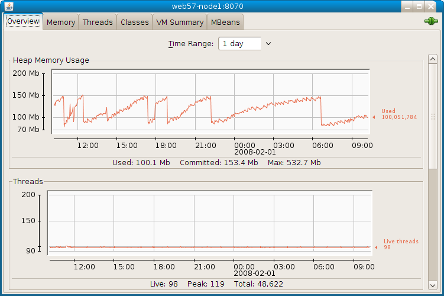

Soaplab2 provides several command-line tools that help service
providers and developers to explore various parts of the Soaplab2
infrastructure. The ultimate goal, sometimes in the future, is to
integrate these and other tools into a Soaplab GUI Dashboard.
Soaplab2 provides several command-line tools that help service
providers and developers to explore various parts of the Soaplab2
infrastructure. The ultimate goal, sometimes in the future, is to
integrate these and other tools into a Soaplab GUI Dashboard.
This script is generated by Ant when Soaplab2 is being built. The original source is in the src/etc/scripts directory. Ant adds there the current Soaplab2 directory, and log4j configuration property.
The best way how to start them is to call them with a -help option.
build/run/run-any-client org.soaplab.admin.ExploreConfig -helpThis is a command-line tool that explores and shows Soaplab2 configuration. For example, to list all used configuration sources, in the order of precedence, type:
build/run/run-any-client org.soaplab.admin.ExploreConfig -lfThe result (as run from a BioinfoGRID plug-in) shows names of files and number of their properties:
Using property resources (in this order): ----------------------------------------- 1: ( 50) Java System Properties 2: ( 12) /home/senger/bioinfogrid-plugin/build/classes/bioinfogrid.properties 3: ( 4) /home/senger/soaplab2/build/classes/soaplab.properties 4: (empty) Directly added properties (no config file)It can also list all available properties, including or excluding the System properties, or show only the named properties.
One can also test what happens (which properties are used) when a new configuration file is added by using option -f <property-file>.
build/run/run-any-client org.soaplab.admin.ExploreStorage -helpThis is a command-line tool that explores, shows and controls the contents of one or more storage handlers. A storage handler stores Soaplab2 results and retrieve them back on request.
This tools allows to access any number of such storage elements, either as a set (so you do not know particularly which handler has just been contacted), or to access a particular element.
Without any parameters, it just shows what persistent storage elements are available, which class represents them, and perhaps some additional information (like where is the persistent storage located):
build/run/run-any-client org.soaplab.admin.ExploreStorage
Available storage:
------------------
org.soaplab.services.storage.FileStorage
Local file system storage: /home/senger/soaplab2/RESULTS
The options -file and -db (and perhaps others, in the
future) direct to explore only specified storage type. Without these
options, the whole set of available storage elements is explored. The Soaplab2 results are always kept grouped by Jobs they created them. The Job Ids are, therefore, used to access particular results. The option -l lists IDs of all currently stored jobs:
build/run/run-any-client org.soaplab.admin.ExploreStorage -l
[testing.echo]31174563.10f17894582.-8000 [testing.echo]-2f8932c2.10f10946730.-7fff [testing.helloworld]791f4392.10f030ae679.-8000 [classic.helloworld]-76d9da02.10f0f4b3003.-8000 ...If there are no existing jobs, you can always use the -run option to create and run a testing job (note that this is a testing job, so this option is not here to run the real jobs, not at all)::
build/run/run-any-client org.soaplab.admin.ExploreStorage -run
Creating and running a job:
---------------------------
Job state before run: [testing.service]-d535e5d.10f2b35b671.-8000 (CREATED)
created: 27-Nov-2006 20:57:57 (Europe/London)
started: 01-Jan-1970 00:59:59 (Europe/London)
ended: 01-Jan-1970 00:59:59 (Europe/London)
elapsed: -1
last event: <?xml version="1.0" encoding="UTF-8"?>
<analysis_event timestamp="Mon Nov 27 20:57:57 GMT 2006">
<state_changed previous_state="UNKNOWN" new_state="CREATED" />
</analysis_event>
Job state after run: [testing.service]-d535e5d.10f2b35b671.-8000 (COMPLETED (0))
created: 27-Nov-2006 20:57:57 (Europe/London)
started: 27-Nov-2006 20:57:57 (Europe/London)
ended: 27-Nov-2006 20:57:58 (Europe/London)
elapsed: 111
last event: <?xml version="1.0" encoding="UTF-8"?>
<analysis_event timestamp="Mon Nov 27 20:57:58 GMT 2006">
<state_changed previous_state="RUNNING" new_state="COMPLETED" />
</analysis_event>
The same kind of information, you can get for an individual job, using
the -job <job-id> and -i options. Also the
option -ri may be useful to find how big are the stored
results. Particularly useful are options for clearing storage. They can be used in cron jobs to clean old jobs and their results:
Removing jobs from the storage(s):
-clean <job-id> ... remove given job
-cleanall ... remove all jobs
-cleanlike <pattern>
Remove jobs whose IDs contain given pattern.
For example: -rp testing.helloworld
-cleanfrom <from-date>
Remove jobs updated after <from-date>. The format of
<from-date> is 'yyyy-MM-dd HH:mm:ss'.
Or, it can be a number (with or without a minus sign)
meaning "last jobs for the given number". The number is
in milliseconds unless it ends with one of the following
characters: 's', 'm', 'h', 'd', 'w', or 'M'.
Examples: -rf 2004-04-30 14:10:00
-rf -20000
-rf -3d
-rf -4w
-cleanto <to-date>
Remove jobs updated before <to-date>. The format is
the same as for <from-date>. For example:
-f -2d -t -1d ... jobs from a day before yesterday
build/run/run-any-client org.soaplab.admin.ExploreParameters -helpThis is a command-line tool that explores and tests command-line parameters created from service metadata and user inputs.
This tool is useful when a service provider creates an ACD file for a new service around a command-line analysis. Before running the analysis, the tool explores what command-line Soaplab2 is going to create for the analysis.
The ultimate source of information about the service metadata and about creating ACD metadata files is the metadata guide. You may consider to read it before exploring parameters with this tool.
A mandatory option is a service name whose parameters are going to be
explored:
-name <service-name>
Exploring metadata is the same as in CmdLineClient. It is included
here for convenience because to know names of input/output data may be
handy:
-i ... show names of analysis inputs
-ii ... show names and attributes of analysis inputs
-o ... show names of possible results
-oo ... show names and types of possible results
Existing metadata of the analysis being explored can be changed
on-the-fly (simulating the change of the ACD description file without
a need to do so manually and generate the whole XML metadata file
again). The following changes are possible:
-m <method-template>
global template substituing
comments: "method XXXX"
in the application section of the ACD file
-m<input_name> <parameter-method-template>
-m_<input_name> <parameter-method-template>
substituting template for individual parameters
-e<input_name>
-e_<input_name>
adding option "envar" to individual parameters
(which measn that the parameter does not appear on the
command-line but it creates an environment property)
The main output is how a command-line would look like, and what
environment properties would be created. This is a default behaviour
unless -arg option is given:
-arg ... show how individual parameters will be created
All remaining options are input data (values for parameters that will
constitued the analysis command-line). The names can be found using
option -i. The recognized formats are:
<input-name> <input-value>
<input-name> :<input-value>
a value starting with ':' is treated as a file name
and the contents of this file is used as an input
-<input-name>
can be used for boolean parameters and it means
the same as:
<input-name> true
Using Java Jconsole tool which is distributed as part of the recent releases of JDK you can monitor your Soaplab Server's memory, thread and CPU usage and can find other useful information that would help you understand current status of your server.
You can use Jconsole to access local or remote Soaplab servers.If your Tomcat server is started using Java6 then local Jconsole access for the same user that started the server is automatically granted. However when using Java5 Tomcat server needs to be started with the following option (Java property) that then would allow local Jconsole access to the server.
com.sun.management.jmxremote = true
The easiest way how to set this property is to use an environment variable JAVA_OPTS when starting Tomcat. For example, directly in the setenv.sh file under your ${tomcat.home}/bin directory as in the following example:
if [ "$1" = "start" ] ; then export JAVA_OPTS="-Dcom.sun.management.jmxremote=true" fi
Above, the first line is to make sure that JMX options are used only when starting the tomcat server but not when stopping the server. Then run:
jconsoleWhen jconsole starts you should see your process in the 'Local Process' list and can select and start monitoring for it.
In order to allow remote Jconsole access to your Soaplab server you should set more JMX parameters (i.e. more Java properties). A practical way of setting these parameters would be to change the setenv.sh file under your ${tomcat.home}/bin directory as in the following example
if [ "$1" = "start" ] ; then
export JAVA_OPTS="-Dcom.sun.management.jmxremote.port=8070 \
-Dcom.sun.management.jmxremote.ssl=false \
-Dcom.sun.management.jmxremote.authenticate=false"
fi
You can then start your local Jconsole process by specifying
the hostname of your remote server and the JMX port number you selected
when starting the server.
jconsole mysoaplabserver.net:8070
When jconsole started it will connect to server automatically. You should see a new panel opened for each connected process similar to the following.
Here you can see how your Soaplab server is using memory over time. The number of threads started can give you an estimate of how many jobs has been started on the server. Similarly 'Peak' number of threads would help you estimate how many concurrent requests were made.
Usufeul Jconsole links: